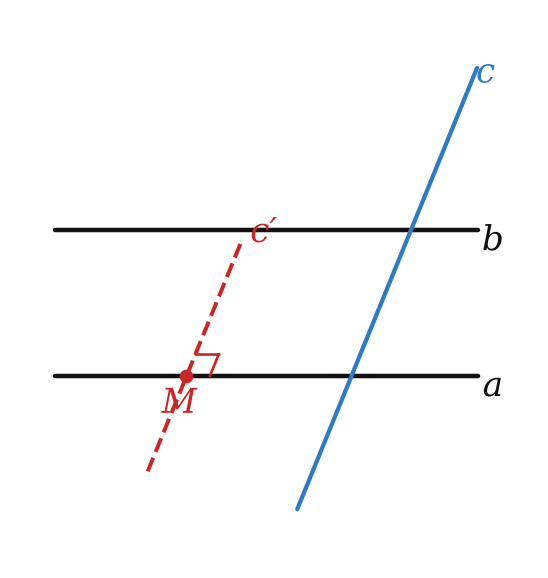
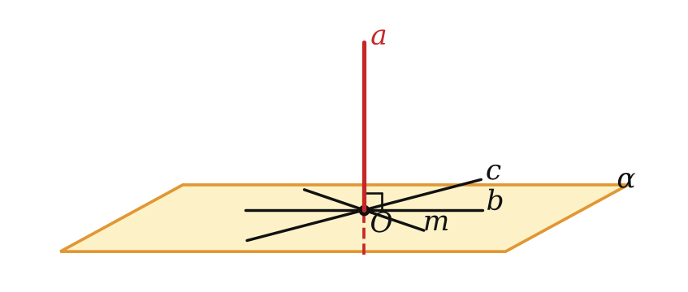
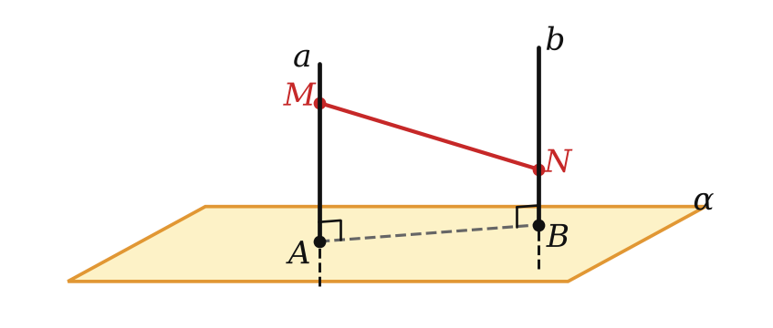
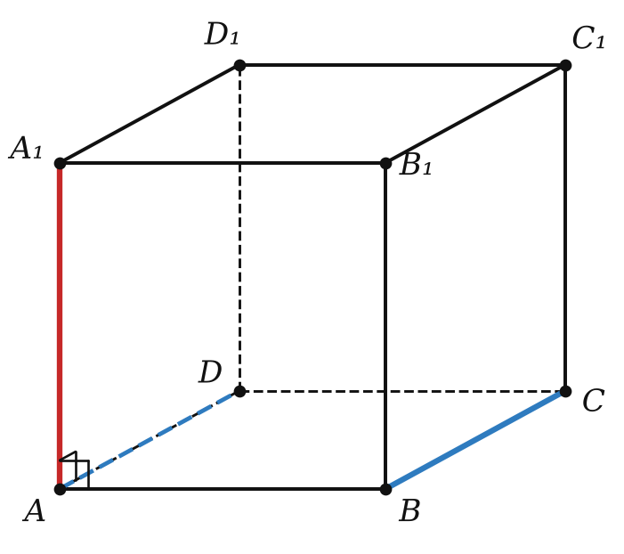

Теория
Перпендикулярные прямые в пространстве
На уроке 3 мы ввели угол между любыми двумя прямыми — и пересекающимися, и скрещивающимися. Значит, слово «перпендикулярны» можно применять к любым прямым, у которых этот угол прямой.
Две прямые в пространстве называются перпендикулярными, если угол между ними равен 90°. Обозначение: a ⊥ b.
Перпендикулярные прямые могут пересекаться (как рёбра AB и AD куба) или скрещиваться (как рёбра AA₁ и BC).
Если одна из двух параллельных прямых перпендикулярна к третьей прямой, то и другая прямая перпендикулярна к этой прямой.

Пусть a ∥ b и a ⊥ c. Возьмём на прямой a точку M и проведём через неё прямую c′ ∥ c.
Угол между a и c по определению — это угол между a и c′, он равен 90°.
Угол между b и c находится так же: проводим через какую-нибудь точку прямые, параллельные b и c. Возьмём точку M: прямая, параллельная b, — это a (через M проходит единственная прямая, параллельная b), а параллельная c — это c′. Получаем тот же прямой угол. Значит, b ⊥ c. ∎
Прямая, перпендикулярная к плоскости
Прямая называется перпендикулярной к плоскости, если она перпендикулярна к любой прямой, лежащей в этой плоскости. Обозначение: a ⊥ α.

Примеры из жизни: вертикальный столб и площадка, ножка стола и пол, линия отвеса и поверхность воды. Перпендикулярная к плоскости прямая обязательно её пересекает: если бы она лежала в плоскости или была ей параллельна, в плоскости нашлась бы прямая, параллельная ей, — а угол между параллельными прямыми равен 0°, а не 90°.
Определение требует перпендикулярности к каждой прямой плоскости, в том числе к тем, что не проходят через точку пересечения. Пока у нас нет признака, проверять это «по определению» неудобно — признак будет на следующем уроке. Сегодня пользуемся определением в обратную сторону: если a ⊥ α, то a перпендикулярна любой прямой из α. Это главный инструмент в задачах.
Если одна из двух параллельных прямых перпендикулярна к плоскости, то и другая прямая перпендикулярна к этой плоскости.
Пусть a ∥ a₁ и a ⊥ α. Возьмём в плоскости α любую прямую x. Так как a ⊥ α, то a ⊥ x. По лемме параллельная прямая a₁ тоже перпендикулярна x. Прямая x была любой, значит, a₁ ⊥ α. ∎
Если две прямые перпендикулярны к плоскости, то они параллельны.

Пусть a ⊥ α и b ⊥ α, прямая b пересекает α в точке B. Проведём через B прямую b₁ ∥ a. По теореме 1 b₁ ⊥ α. Докажем, что b₁ совпадает с b.
Допустим, это не так. Тогда через пересекающиеся прямые b и b₁ проходит плоскость β; она пересекает α по прямой c. Обе прямые b и b₁ перпендикулярны к c (так как обе перпендикулярны к α), проходят через точку B и лежат в плоскости β. Но в плоскости через точку прямой можно провести только один перпендикуляр к ней. Противоречие. Значит, b = b₁, то есть b ∥ a. ∎
Разбор примеров

Найдите угол между прямыми AA₁ и BC куба ABCDA₁B₁C₁D₁.
Прямые скрещиваются. BC ∥ AD, а AA₁ ⊥ AD (грань AA₁D₁D — квадрат). По лемме AA₁ ⊥ BC. Ответ: 90°.
Прямая MA перпендикулярна к плоскости квадрата ABCD со стороной 6, MA = 8. Найдите MB и MC.
MA ⊥ (ABC), поэтому MA перпендикулярна любой прямой этой плоскости, в том числе AB и AC. Треугольники MAB и MAC прямоугольные с прямым углом при вершине A.
MB = √(8² + 6²) = 10. Диагональ квадрата AC = 6√2, MC = √(64 + 72) = √136 = 2√34.
Прямые a и b перпендикулярны к плоскости α и пересекают её в точках A и B, AB = 4. На a взята точка M, на b — точка N по ту же сторону от α, AM = 5, BN = 2. Найдите MN.
По теореме 2 a ∥ b, значит, точки A, B, N, M лежат в одной плоскости и ABNM — прямоугольная трапеция (MA ⊥ AB, NB ⊥ AB). Опустим из N перпендикуляр на MA: катеты 4 и 5 − 2 = 3. MN = √(16 + 9) = 5.
Если точки M и N лежат по разные стороны от плоскости, второй катет — не разность, а сумма: 5 + 2 = 7, и MN = √(16 + 49) = √65. Всегда уточняйте по условию, где лежат точки.
Задачи урока
Реши в тетради, к каждой задаче — чертёж. Разберём на занятии.
Тест к уроку
Домашнее задание
Задачи Д1–Д6 ниже, к каждой — чертёж. Выучить определения и формулировки леммы, теорем 1 и 2; доказательство теоремы 2 — рассказать устно.